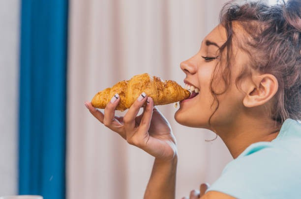

SOBRE NÓS
Somos um grupo de estudantes no quarto semestre de desenvolvimento de software multiplataforma, sempre buscando criar soluções praticas para problemas reais.
Formamos uma equipe criativa movida pela paixão por transformar ideias em projetos reais. Acreditamos que a criatividade, quando aliada à estratégia e à colaboração, é capaz de gerar soluções inovadoras e impactantes. Mais do que desenvolver projetos, criamos experiências, contamos histórias e damos vida a conceitos, porque a imaginação é o barco e o remo para a inovação.
Objetivo
Este portfólio coletivo tem como objetivo apresentar nossos projetos, feitos, habilidades e individualidades que desenvolvemos ao longo da nossa trajetória. Buscamos demonstrar não apenas resultados, mas também os processos criativos e técnicos por trás de cada trabalho. Cada integrante contribui com sua própria visão, enriquecendo o conjunto com diversidade de ideias e estilos. Valorizamos a colaboração como ferramenta essencial para a construção de soluções inovadoras. Aqui, reunimos experiências que refletem nosso aprendizado contínuo e evolução profissional. Nosso propósito é evidenciar nosso potencial e nossa capacidade de transformar ideias em projetos concretos. Assim, este espaço representa quem somos, o que sabemos fazer e onde queremos chegar..
Nossos métodos
Trabalhamos por etapas bem definidas, que vão desde a compreensão do problema até a entrega final do projeto. Cada fase é construída de forma dinâmica, incentivando a troca de ideias e a participação ativa de todos os integrantes. Valorizamos o brainstorming, a experimentação e a liberdade criativa como parte essencial do processo. Ao longo do desenvolvimento, revisamos e ajustamos nossas soluções de maneira contínua, buscando sempre a melhoria. A colaboração é o centro do nosso trabalho, unindo diferentes perspectivas para resultados mais completos. Assim, transformamos cada projeto em uma experiência coletiva, inovadora e eficiente.
